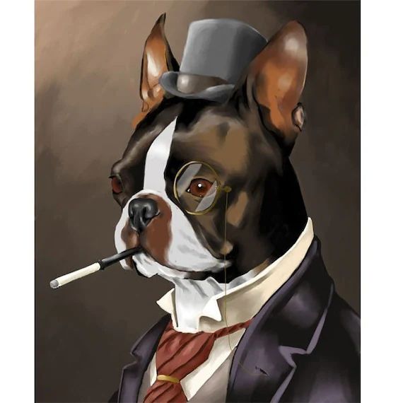

My name is Jack Parker, and I'm a 24 year old from Columbus ohio, I'm an avid traveler and love to visit new places and learning new things. I am currently learn front and backend web development at THE Ohio State University. I plan to use this new skills to enter into the field of web development and start a life long career. Me and my family have deep roots in ohio, and Cincinnati in particuler, we've lived here for over 7 generations. I'm a huge fan of all Ohio sports teams but my heart goes out to all Cincinnati teams the most and I look forward to Bengals hoppfully winning the superbowl, though I know it will most likely only be in my dreams.